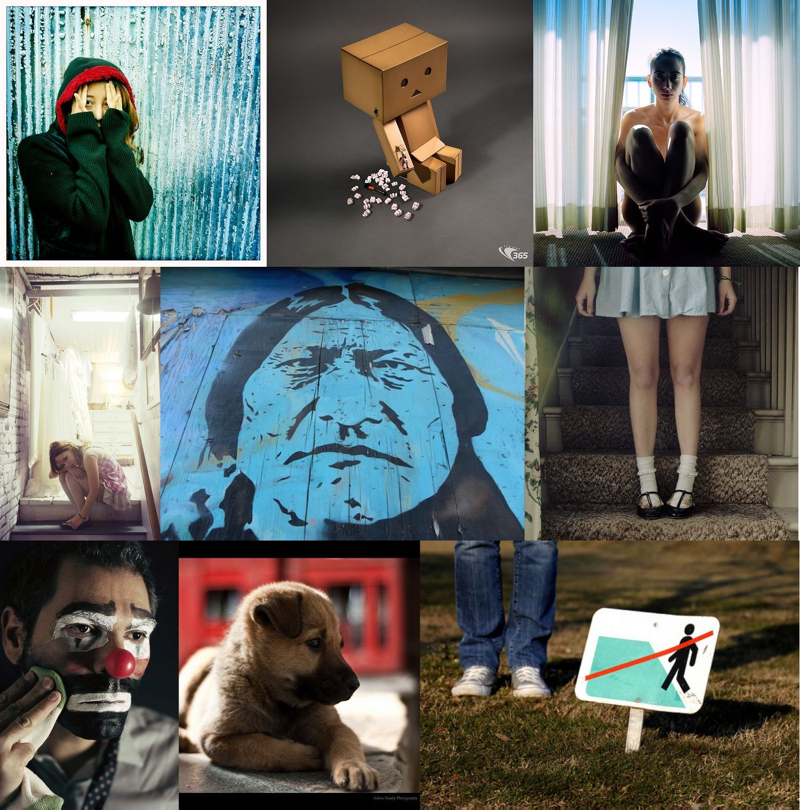
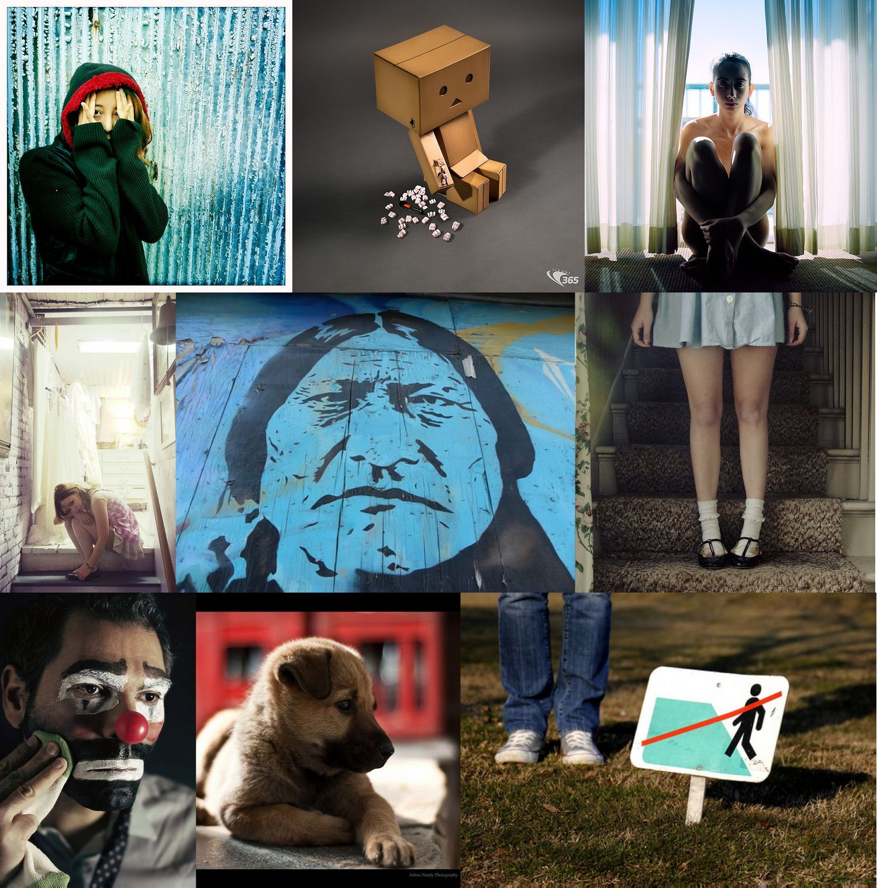

| negative | neutral | positive |
|  |  |
Recently text-based sentiment prediction has been extensively studied, while image-centric sentiment analysis receives much less attention. In this paper, we study the problem of understanding human sentiments from large-scale social media images, considering both visual content and contextual information, such as comments on the images, captions, etc. The challenge of this problem lies in the " semantic gap " between low-level visual features and higher-level image sentiments. Moreover, the lack of proper annotations/labels in the majority of social media images presents another challenge. To address these two challenges, we propose a novel Unsupervised SEntiment Analysis (USEA) framework for social media images. Our approach exploits relations among visual content and relevant contextual information to bridge the " semantic gap " in the prediction of image sentiments. With experiments on two large-scale datasets, we show that the proposed method is effective in addressing the two challenges.
| negative | neutral | positive |
|  | |
The webpage is under construction, please check the webpage later.